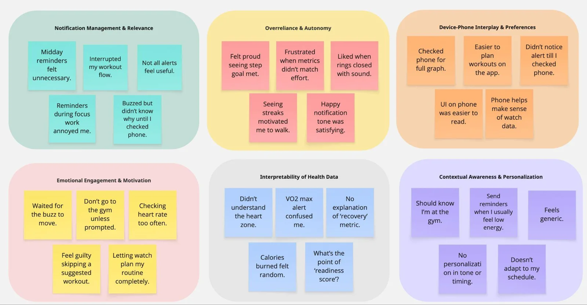
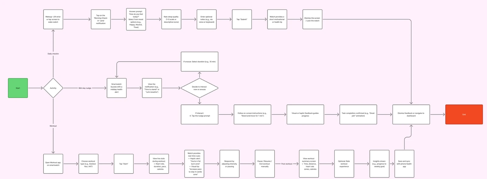
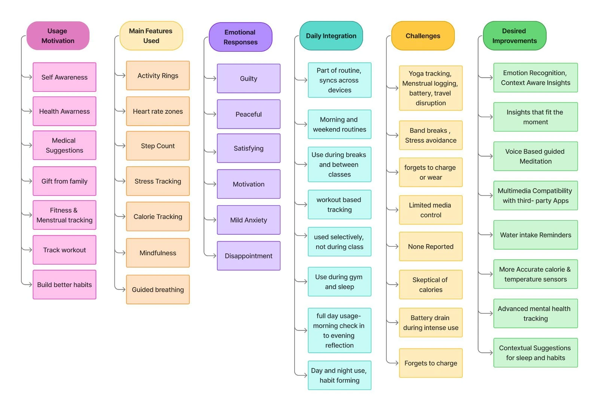
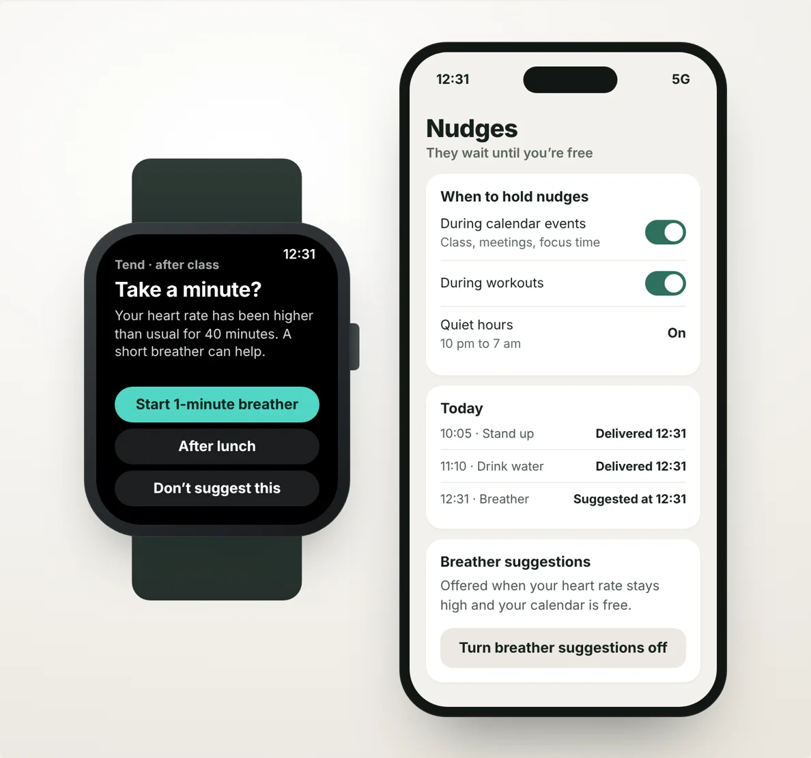
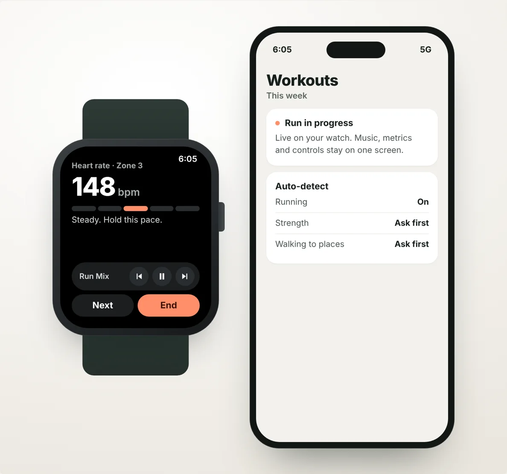
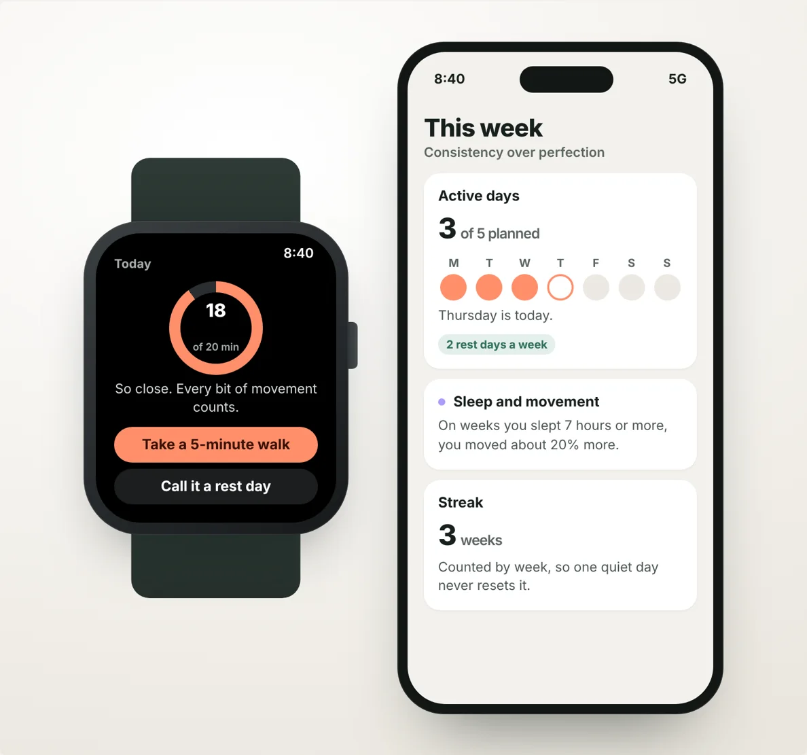
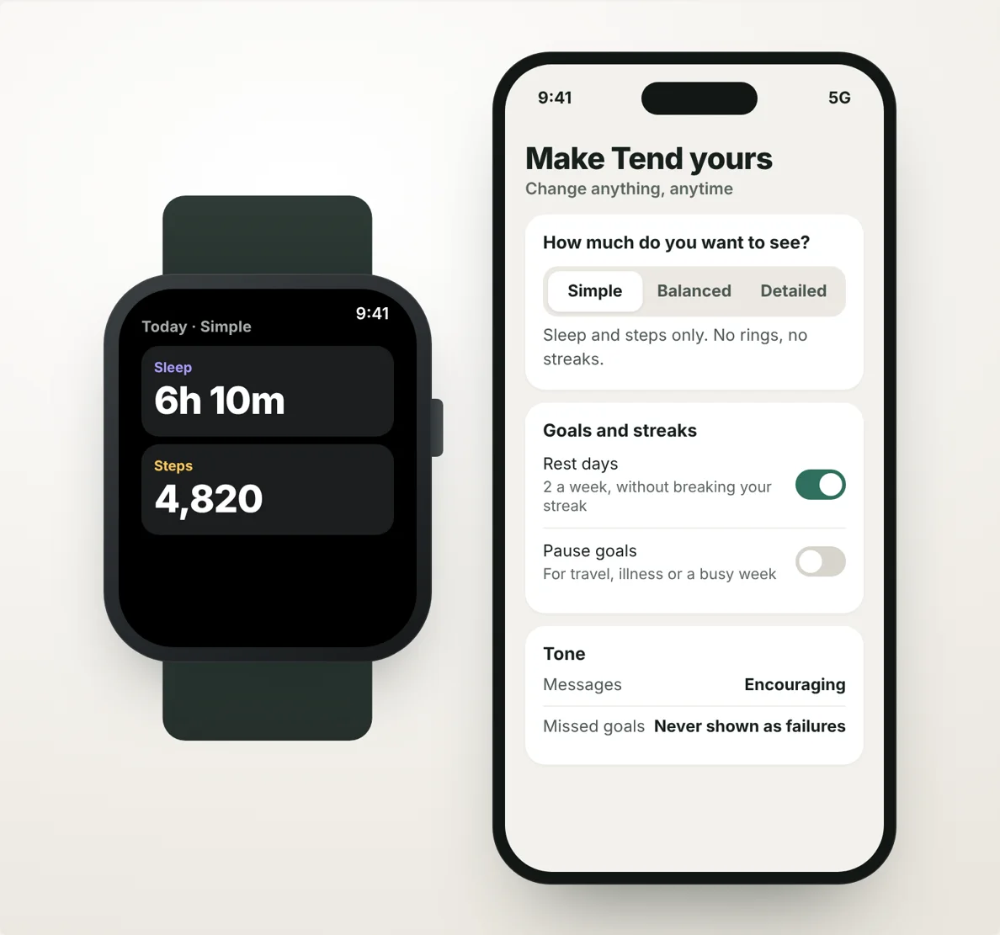

The brief: features people pay for, then ignore
Smartwatches track sleep, movement, heart rate and stress, and promise to help people build healthier habits. In practice, engagement is uneven. Some people use the device all day and explore every feature. Others keep it to steps and sleep, or put it in a drawer.
For our human research methods course, our team asked one question: how do people engage, emotionally and behaviourally, with smartwatch features during daily check-ins, health notifications and workouts?
Get health information that feels useful and encouraging, at moments that suit them, without guilt or overload.
Keep people engaged over months, not weeks, by building features that fit how they actually live.
How we studied it
We used two methods so we could see both what people do and why. Observation showed behaviour in the moment; interviews explained the motivations and feelings behind it. All participants already used a smartwatch, mostly Apple Watch, with some Fitbit, Garmin and Samsung users.
Observation
Aged 23 to 28 · 4 in person, 2 on Zoom
Used their own watch in three scenarios: an end-of-day check-in, a midday nudge while busy, and live feedback during a workout. Each ended with reflection questions.
Interviews
Different people, aged 23 to 35 · 2 in person, 6 on Zoom
30-minute semi-structured interviews on long-term use, motivation, goals, and how health feedback made them feel.
To analyse the observations, we mapped an activity sequence for each scenario and grouped what we saw into an affinity diagram. For the interviews, each of us coded our own transcripts in Atlas.ti. We then agreed one shared codebook and counted how often each theme came up.

The observation affinity diagram: six themes, from notification relevance to whether people could make sense of their data.
- Notes like “Reminders during focus work annoyed me” and “Felt guilty skipping a suggested workout” became the findings below.
- Each note is a researcher’s summary of something we saw or heard, not a direct quote.

The observation activity sequence: all three scenarios, step by step. Open full size

- Snoozing a nudge brings the same alert back later.
- A workout runs from picking a type to syncing with the phone, with live cues in between.

The interview codebook, as an affinity diagram: six code groups, from why people wear a watch to what they want next.
- Emotional responses ranged from peaceful and satisfied to guilty and mildly anxious.
- The desired improvements became the rows of the priority matrix below.
What we found
Five patterns came up across both methods.
Underneath all of them: people kept using features that felt relevant, rewarding and simple, and quietly dropped the ones that felt intrusive or took too much effort.
Sleep
Sleep is the first thing people check
For design: Lead with sleep, and let it shape the rest of the day.
Evidence from the sessions
Nearly everyone opened sleep data first, in both studies. Several adjusted their plans for the day based on how they slept.
“I check my sleep score in the morning.” Interview participant
Goals
Goals motivate, until they’re missed
For design: Count progress over the week, allow rest days, and speak kindly when a goal is missed.
Evidence from the sessions
Closing activity rings made people proud. Missing them made several feel frustrated or guilty, and some avoided opening the app on days they hadn’t moved.
“Some days I feel like I’m being judged.” Interview participant
Workouts
Workout feedback helps active users, with friction
For design: One clear metric at a time, music on the same screen, honest estimates, and automatic detection.
Evidence from the sessions
Fitness-focused participants paced themselves by heart rate zone and calories. They struggled with small, busy screens, switching between workout and music, and calorie numbers they didn’t trust. Some wanted workouts to start tracking automatically.
Mindfulness
Mindfulness is used in the moment, not as a habit
For design: Offer a short breather when the body and the calendar suggest it, not on a timer.
Evidence from the sessions
A few people used breathing exercises when stressed at work or in class, but almost no one used them regularly. Nothing prompted them at the right time.
Casual use
Casual users want the device to stay in the background
For design: A simple mode, and nudges that wait until people are free.
Evidence from the sessions
Casual users tracked sleep and steps, ignored most notifications, and avoided anything complex. Many health reminders were dismissed simply because they arrived at a bad time.
Four kinds of wearable user
We placed the eight people we interviewed along six spectrums, from passive to active use and from “doesn’t care much” to “responds emotionally to goals”. Four clusters emerged, and became the personas that guided the design.
How often they use the data
PassiveActive
How often they use the data: from passive to active. Placement, left to right: P1, P2, P3, P4, P5, P7, P6, P8.
Main reason for wearing it
WellnessPerformance
Main reason for wearing it: from wellness to performance. Placement, left to right: P1, P3, P2, P7, P4, P5, P6, P8.
How often they wear it
SometimesAlways on
How often they wear it: from sometimes to always on. Placement, left to right: P2, P4, P1, P3, P5, P6, P7, P8.
How they feel about goals
Don’t care muchRespond emotionally
How they feel about goals: from don’t care much to respond emotionally. Placement, left to right: P1, P2, P3, P4, P7, P5, P6, P8.
Features they want
BasicAdvanced
Features they want: from basic to advanced. Placement, left to right: P1, P2, P4, P3, P5, P6, P7, P8.
Change behaviour from data
Just awareChange based on it
Change behaviour from data: from just aware to change based on it. Placement, left to right: P2, P4, P1, P3, P5, P7, P6, P8.
The persona spectrum. Participants are shown as codes, not names.
Uses everything, all day. Wants context-aware, kind suggestions, and feels guilty when she misses a goal.
Lives in workout mode. Wants accurate heart rate and calories, automatic detection and easy music control.
Uses breathing and trends to manage busy days. Gets overwhelmed by data when stressed and wants gentle, unobtrusive nudges.
Wears it mainly for sleep and steps. Distrusts calorie numbers and wants a minimal mode with features he can switch off.
A day in each persona’s life
For each persona we wrote a scenario from what we saw and heard, then mapped their journey through the day: goals, actions, thoughts and pain points.
A typical day for Lisa, the wellness explorer: A stressful workday, handled mindfully
- Checks her sleep score and heart rate
- Sees a poor night and lowers her expectations
- Stays lightly active with the rings
- Takes a guided mindfulness break
- Reviews her trends in the evening
Outcome More self-aware by evening, but a missed goal still brings guilt.
| Morning | During the day | Evening | Overall | |
|---|---|---|---|---|
| Goals | Understand how well she rested | Stay active and manage stress | Reflect on activity and well-being | Improve self-awareness and well-being |
| Actions | Checks sleep stages and heart rate | Tracks rings, steps and heart rate; uses the Mindfulness app | Reviews activity trends | Uses the watch all day, alongside other apps |
| Thoughts | “Morning starts with checking my sleep and heart rate.” | “I like doing a quick mindfulness or breathing session.” | “In the evening, I review my activity.” | “It’s empowering… validates the effort I put into self-care.” |
| Pain points | — | Rings can trigger guilt: “Frustrated… triggers this internal narrative.” | — | Wants feedback that reads her mood: “I’d love to see emotion recognition.” |
A typical day for Peter, the fitness optimiser: Getting the most from a gym session
- Wears the watch to the gym
- Starts a treadmill workout by hand
- Watches heart rate zones and calories
- Checks calories after; happy if he hit his target
- Glances at his steps later
Outcome The data makes him feel his effort counted. He wants better sensors and smoother tracking.
| Before a workout | During | After | Overall | |
|---|---|---|---|---|
| Goals | Get ready to train | Track performance | See results | Improve fitness |
| Actions | Wears the watch to the gym | Starts the workout by hand; tracks calories, steps and heart rate zones | Checks calories burned and steps | Focuses on workouts; checks steps now and then |
| Thoughts | — | “I use it to track my workout time on treadmill.” | “It is very satisfying… it feels like I achieved something that day.” | “It helps me keep active.” |
| Pain points | No automatic workout detection | Doubts the calorie count: “I would work on the calorie sensor.” | — | Wants better music controls mid-workout |
A typical day for Ron, the balanced worker and parent: A busy teaching day
- Checks his sleep score and adjusts the day
- Uses guided breathing in class when stressed
- Checks his heart rate if he feels off
- Glances at steps between classes
- Uses the relaxation timer while grading
Outcome The watch helps without adding stress, but on hard days he stops looking at the data.
| Morning | During the day | Evening | Overall | |
|---|---|---|---|---|
| Goals | Understand sleep quality | Stay aware of stress and movement | Wind down and manage stress | Stay balanced without obsessing |
| Actions | Checks his sleep score | Checks heart rate if he feels off, steps between classes, guided breathing | Sometimes uses the relaxation timer | Uses it flexibly, looking at trends |
| Thoughts | “I check my sleep score in the morning.” | “The guided breathing feature has become part of my classroom routine.” | “At night, I sometimes use the relaxation timer while grading.” | “It’s more about small, consistent awareness than chasing metrics.” |
| Pain points | — | Skips data when stressed: “I stop checking data altogether.” | Wants less data: “Less data, more meaning.” | Misses the watch when his routine breaks |
A typical day for Sky, the tech casual: Sleep insights, and little else
- Wears it overnight and checks sleep in the morning
- Wears it in the day if it’s charged
- Skips the rings and mindfulness
- Ignores calories, which he doesn’t trust
Outcome A passive tracker he uses as a reference, not a coach.
| Morning | During the day | Evening | Overall | |
|---|---|---|---|---|
| Goals | Check one basic health number | Stay casually aware of movement | — | Basic tracking only |
| Actions | Checks sleep | Checks steps now and then | No regular evening use | Wears it at night, sometimes in the day |
| Thoughts | “I wear it even while sleeping… mainly for tracking sleep.” | “I still use it mainly for tracking sleep and steps.” | — | “It doesn’t affect my day much.” |
| Pain points | — | — | — | Doesn’t trust calories: “Started thinking the calorie numbers might be way off.” |
What keeps people engaged
Across both studies, three things decided whether a feature stayed in someone’s day.
It fits what they need right now. The same nudge is noise in class and helpful after it.
It feels rewarding, like a closed ring or a good night’s sleep. Guilt makes people look away.
It takes no effort to read. With too much data, people stop checking.
So the design should adapt to context, nudge gently, and let each person choose how much feedback they get, whether they train daily or just want to sleep better.
Deciding what to fix first
We rated every improvement participants asked for by its value to users and the effort to build it. The low-effort, high-value items became the core of the prototype. Select an item to see what we built.
- Pause streaks without guilt
Value high, effort low. Our call: do next.
In the prototype: Rest days and pausing goals
- Simpler screens, less data overload
Value high, effort low. Our call: do next.
In the prototype: One metric at a time during workouts
- Simpler UI mode for casual users
Value medium, effort low. Our call: do next.
In the prototype: Simple mode: sleep and steps only
- Better media controls during workouts
Value medium, effort low. Our call: do next.
In the prototype: Music controls on the workout screen
- Water intake reminders
Value medium, effort low. Our call: do next.
In the prototype: Included, and held until you’re free
- Automatic workout detection
Value high, effort medium. Our call: improve soon.
In the prototype: Detects a run and asks before tracking
- Trend-based insights
Value high, effort medium. Our call: improve soon.
In the prototype: Weekly view on the phone
- More accurate calorie and heart rate sensors
Value high, effort medium. Our call: improve soon.
In the prototype: Hardware, so not designed. Calories shown as an honest range
- Emotion recognition and context-aware insights
Value very high, effort high. Our call: plan strategically.
In the prototype: Partly: nudges timed to calendar and heart rate
- Mood tracking
Value very high, effort high. Our call: plan strategically.
In the prototype: Not yet
The design: a week with Tend
Tend is a fictional watch and phone app I designed in 2026 from the study. It follows the moments we observed across one week: waking up after a short night, a busy midday, an early run and winding down. Every screen traces back to one of the findings above.
Morning · sleep and goals
Sleep first, and a plan that adapts to it
After a short night, Tend leads with sleep and offers a lighter plan. Taking it never breaks a streak, so a bad night doesn’t become a failed day.
The watch suggests an easier day; the phone shows sleep before anything else.
- Sleep leads on both screens, because that’s what people opened first.
- Easing the goal is a choice, with “Keep my usual goals” one tap away.
Midday · mindfulness and casual use
Nudges that wait until you’re free
Reminders are held during calendar events and delivered together afterwards. A one-minute breather is offered when heart rate has stayed high, and each nudge can be snoozed or switched off on the spot.

Held during class, offered after it.
- The phone log shows what was held and when it arrived, so nothing feels lost.
- “Don’t suggest this” respects people who turn features off, instead of nagging them.
Workout
One number, music in reach, honest calories
Tend notices a run and asks before tracking it. During the run it shows one large metric at a time, with music controls on the same screen. Afterwards, calories appear as a range.

Heart rate zone, large enough to read mid-stride.
- No switching to a music app mid-workout.
- Auto-detect asks first, and learns from “Not a workout”.
Evening · goals
Ending the day without guilt
When a goal is nearly done, Tend offers a short walk or a rest day, and treats both as fine. Streaks are counted by week, so one quiet day never resets them.

Two good options, and no failure state.
- The copy encourages and never scolds.
- Rest days are planned for, two a week by default.
Make it yours · casual use
As much detail as you want
Simple, Balanced and Detailed modes let casual users keep it to sleep and steps, while fitness users turn everything on. The watch face changes as you choose.

Simple mode: two numbers, nothing else.
- Built for Sky, who distrusts calories and ignores advanced features.
- Tone, rest days and pausing goals are all in one place.
How I’d test it
The prototype hasn’t been tested with users yet. Because the problems we found play out over days, not minutes, a single usability session wouldn’t be enough. My plan:
- A two-week diary study with 8 wearable users, at least one matching each persona.
- Track how many nudges are acted on, snoozed or dismissed, compared with each person’s current watch.
- Ask, after missed goals, how supported or judged people felt, and whether they opened the app the next day.
- A short usability test of the workout screen while walking on a treadmill, to check it’s readable in motion.
Limitations
- Different people took part in the observations and the interviews, so we couldn’t link someone’s behaviour to their own long-term habits.
- Most participants used an Apple Watch, and all observation participants were men in their twenties.
- People knew they were being observed, and interviews rely on memory.
- Tend is a fictional product with sample data. Context-aware nudges would depend on calendar access and heart rate data, which raises privacy questions I’d explore with users before building.
Reflection
- Watching and asking answer different questions. Observation showed what people did with a nudge in the moment. Interviews explained why some had dropped features altogether.
- Design for the bad day. The guilt we heard shaped more of Tend than any feature request: rest days, weekly streaks and kinder words.
- Next time, the same people for both. With different groups, we couldn’t link a moment to a habit. I’d run both methods with one group, and test Tend with all four kinds of user.